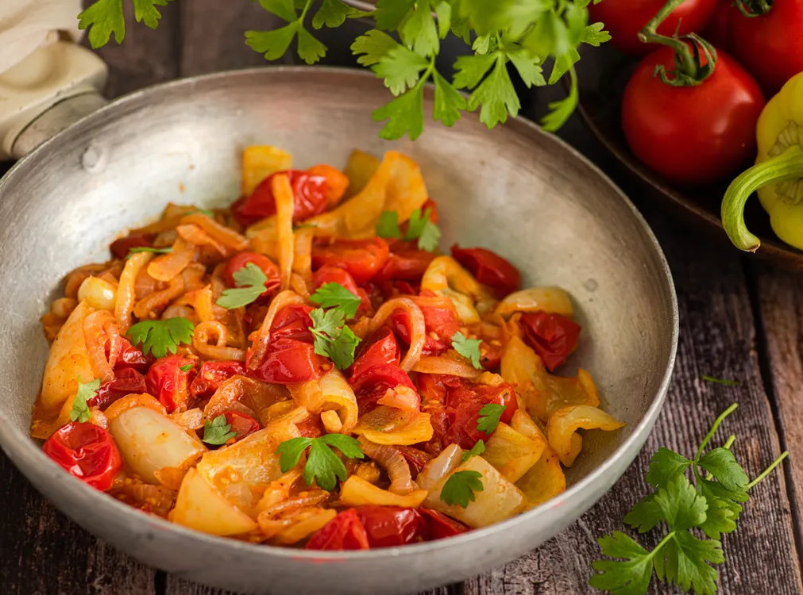

Sataras

Description
Sataraš is a light vegetable stew made of bell peppers, tomatoes, onions and condiments.
It is very similar to a Hungarian dish called lecsó, which is popular throughout southeast Europe.
Ingredients
- Pepper
- Onion
- Olive oil
- Garlic
- Salt and Pepper
- Can of diced tomato
Steps
- Slice onion and peppers, add garlic, salt, black peppers and red chilli flakes add oil.
Mix all ingredients and put in roasting pan. Bake at 350 F for 30 min
- After 30 min adds diced tomatoes and mix.
At this point, you can add herbs of your choice if you won't, but it is not necessary.
Back to the oven for another 30 min or decide what consistency you want.
- Enjoy!
Return home